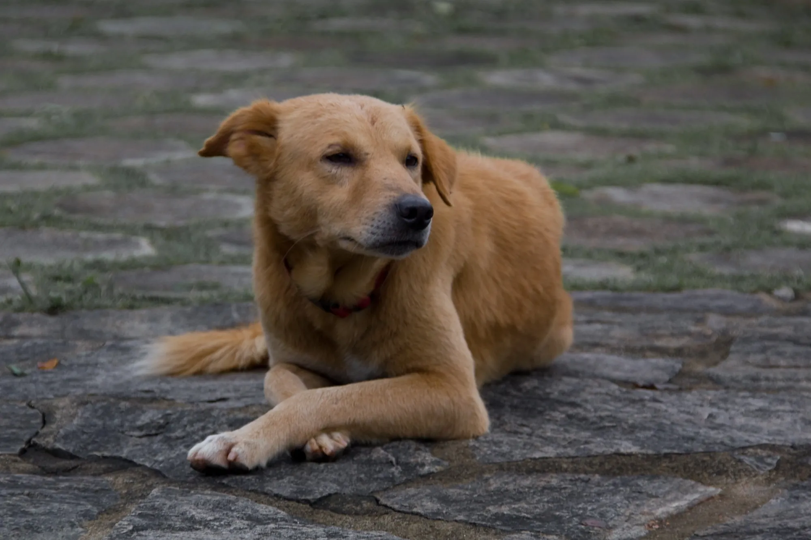
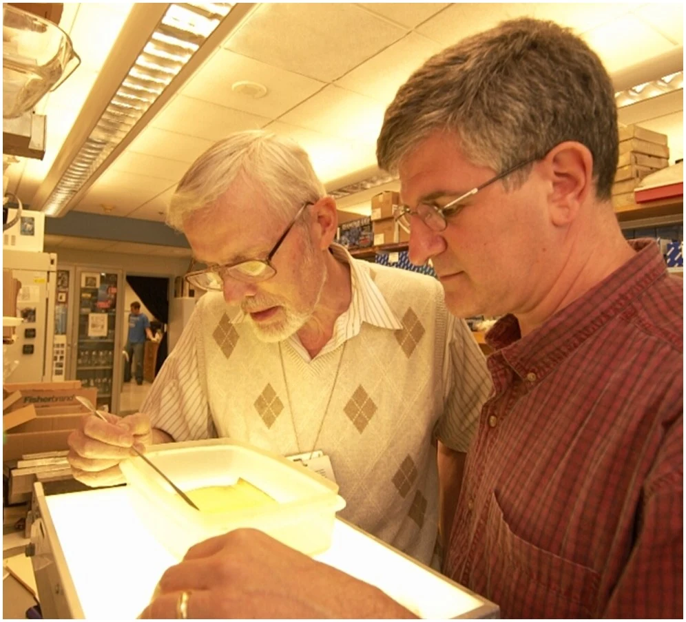

Historia
Extra Hotel Stockholm har en historia som började med en hund. På 1960-talet drev en änka ett litet pensionat i samma byggnad som idag, och hennes trogna hund Extra blev snabbt känd bland gästerna för sitt sätt att hälsa alla välkomna vid dörren. Ryktet om det gästvänliga stället med den charmiga fyrbenta värden spred sig snabbt, och pensionatet växte så småningom till det hotell vi känner idag.

Nutid
Idag drivs Extra Hotel Stockholm av en far och son, som tillsammans för arvet vidare med samma omtanke som en gång präglade det lilla pensionatet. Tillsammans har de moderniserat hotellet steg för steg, samtidigt som de har värnat om den personliga känsla och värme som alltid varit hotellets hjärta.